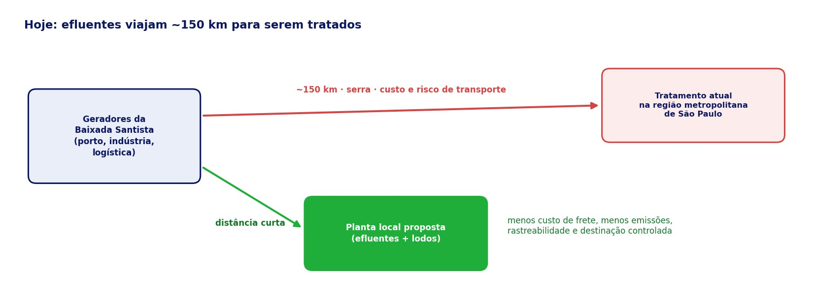
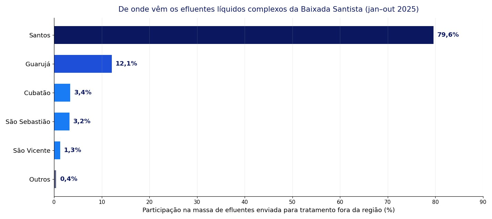
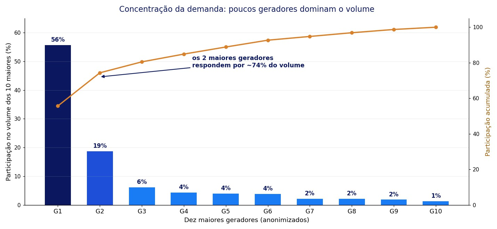
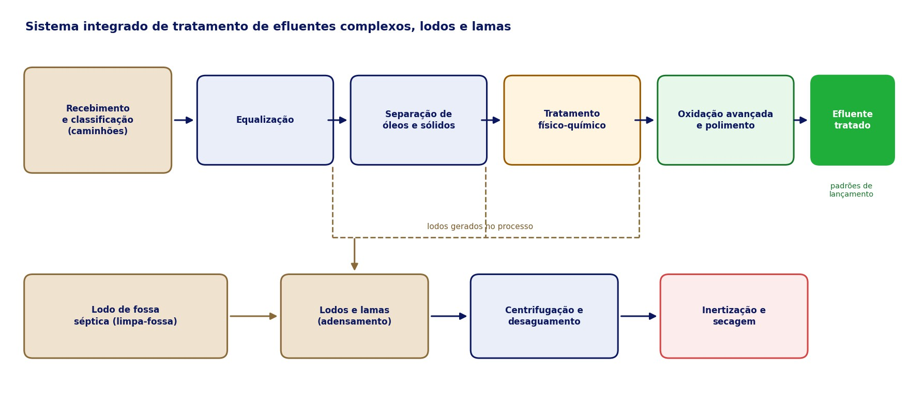
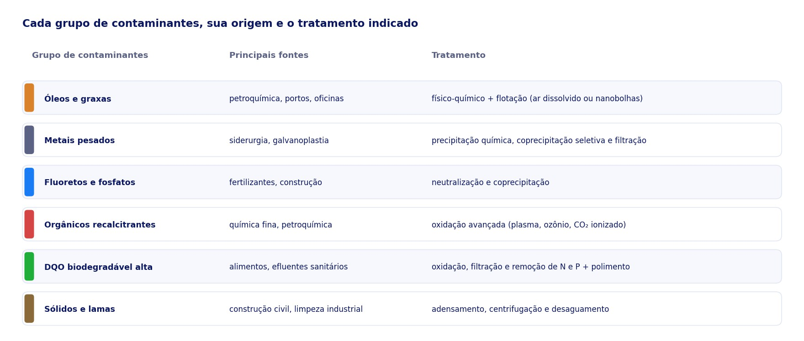
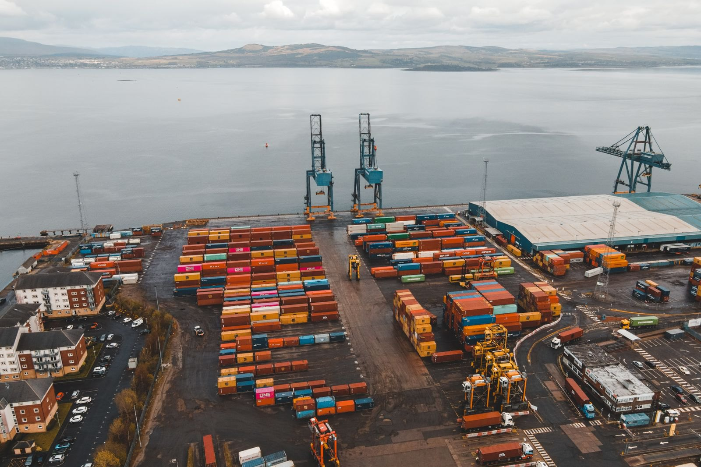
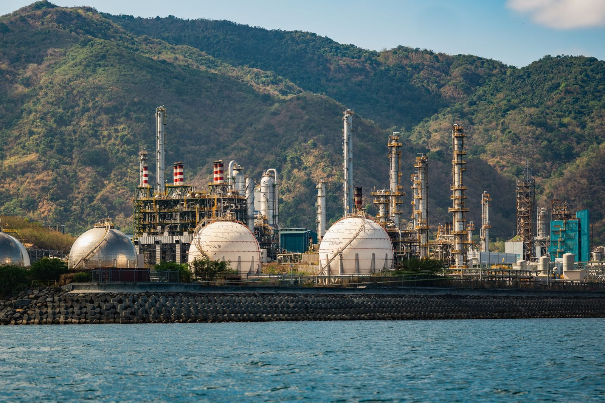
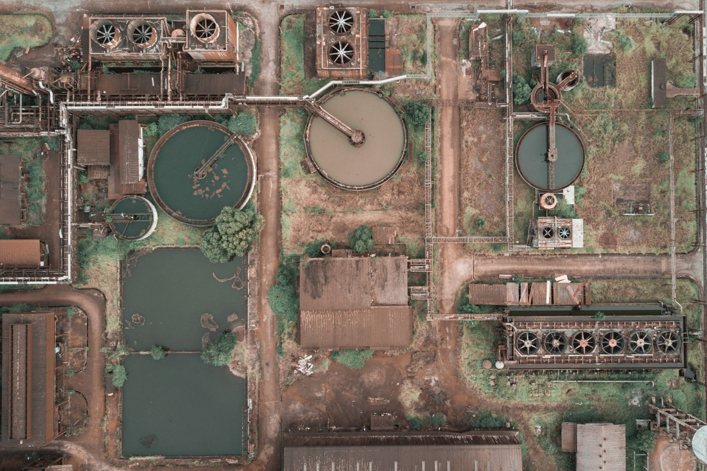

Problema / desafio do cliente
A Região Metropolitana da Baixada Santista concentra um dos maiores portos e polos industriais do país, com geradores de efluentes de perfis muito diferentes: petroquímica, siderurgia, química, alimentos, terminais portuários e logística. Boa parte desses efluentes líquidos complexos precisa sair da região para ser tratada, e os lodos de fossa séptica e as lamas industriais têm poucas alternativas de destinação segura.
O objetivo foi avaliar o mercado e conceber a tecnologia de uma planta regional capaz de receber e tratar esses resíduos líquidos de forma controlada, próxima aos geradores.
Contexto e características do processo
- Na região, extensas áreas ocupadas não têm rede coletora viável por causa do terreno; as fossas sépticas não conseguem infiltrar o efluente no solo úmido e precisam ser esvaziadas periodicamente.
- Existe apenas uma estação licenciada para receber efluentes líquidos, concebida para esgoto doméstico e com capacidade limitada; parte do esgoto regional é lançada por emissários submarinos já saturados.
- Hoje, parte dos efluentes complexos gerados na região é transportada para tratamento na região metropolitana de São Paulo, a uma distância média de cerca de 150 km.
- Os aterros sanitários, destino comum de lodos e lamas, estão se tornando uma opção escassa e cara.

Diagnóstico e dados analisados
- De janeiro a outubro de 2025, Santos respondeu por cerca de 80% da massa de efluentes complexos enviada para tratamento fora da região, seguida por Guarujá (12%), Cubatão, São Sebastião e São Vicente.
- A demanda é concentrada: entre os dez maiores geradores, os dois primeiros respondem por cerca de 74% do volume.
- O volume enviado para tratamento fora da região é pequeno diante do número de geradores, o que indica destinações incertas e não rastreáveis e reforça a necessidade de uma solução local e controlada.
- Não há grandes empresas dominando o setor, e o alto custo de transporte favorece fornecedores próximos aos geradores.


Metodologia utilizada
- Levantamento do mercado: geradores, volumes e destinos dos efluentes complexos da região.
- Análise por município e por gerador para dimensionar a demanda e sua concentração.
- Diagnóstico da infraestrutura regional de saneamento e das alternativas atuais de destinação.
- Classificação dos contaminantes por grupo, fonte e tratamento indicado.
- Concepção do sistema integrado de tratamento, em conformidade com a legislação estadual de São Paulo e com a Resolução CONAMA nº 430/2011.
Solução de engenharia desenvolvida
A solução proposta é uma planta integrada e modular, que recebe cada tipo de efluente já classificado por origem e características físico-químicas e combina as etapas necessárias para cada caso:

- Linha líquida: equalização, separação de óleos e sólidos, tratamento físico-químico, oxidação avançada e polimento final.
- Linha de lodos: lodos de fossa e lodos gerados no próprio processo seguem para adensamento, centrifugação, desaguamento e, quando necessário, inertização e secagem.
- Flexibilidade para absorver variações de carga e composição dos efluentes.
Tecnologias e processos envolvidos

- Flotação por ar dissolvido ou nanobolhas para óleos e graxas.
- Precipitação e coprecipitação para metais pesados, fluoretos e fosfatos.
- Oxidação avançada (plasma, ozônio, CO₂ ionizado) para orgânicos recalcitrantes.
- Remoção de nitrogênio e fósforo e polimento final para efluentes com DQO biodegradável alta.
- Adensamento, centrifugação, desaguamento, inertização e secagem de lodos e lamas.
Modelagem, simulação e ferramentas computacionais
Modelos, simulações e ferramentas usados (balanços, CFD, Python, MATLAB, redes neurais, DMD, dashboards…) e o que cada um permitiu avaliar ou decidir.
Resultados obtidos
- Mercado comprovado: demanda contínua e diversificada (indústria, portos, logística e limpa-fossa), com poucos concorrentes e alto custo de transporte para fora da região.
- Demanda mapeada por município e por gerador, com forte concentração em Santos e Guarujá.
- Conceito tecnológico definido para tratar óleos, metais, fluoretos, fosfatos, orgânicos recalcitrantes, DQO alta, sólidos e lodos em uma única unidade.
- Conclusão de elevada viabilidade técnica e ambiental e oportunidade de receita recorrente com a implantação de uma planta regional.
- Benefícios regionais: menos transporte de cargas perigosas pela serra, destinação rastreável e menor pressão sobre aterros e emissários.
CAPEX/OPEX e análise técnico-econômica
Quando aplicável: estimativas de CAPEX e OPEX, comparação entre alternativas, custo por m³ ou por tonelada, payback.
Escopo e responsabilidades da GETA
A GETA foi responsável por:
- levantamento e análise dos dados de geração e destinação de efluentes da região;
- diagnóstico da infraestrutura regional de saneamento;
- classificação dos contaminantes e definição das rotas de tratamento;
- concepção do sistema integrado de tratamento de efluentes, lodos e lamas;
- avaliação de viabilidade técnica e ambiental.
Principais entregáveis
- Relatório de mercado de efluentes líquidos complexos da região.
- Mapeamento da demanda por município e por gerador.
- Matriz de contaminantes × tratamentos.
- Fluxograma conceitual da planta integrada.
- Considerações de viabilidade técnica, ambiental e econômica.
Galeria


